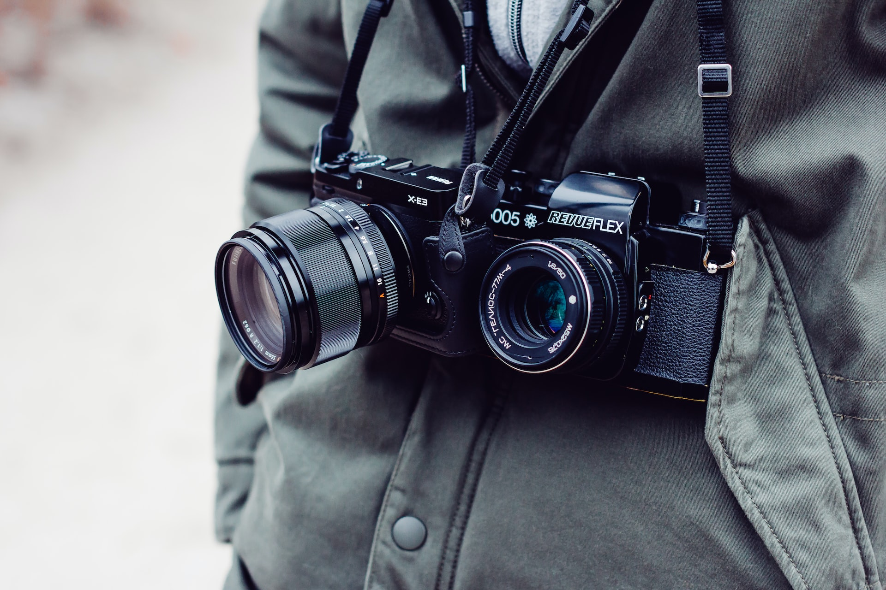

Este paquete, que incluye fotografías digitales y videos, va un paso más allá en la calidad y el alcance de lo que se puede lograr visualmente:
Fotografías digitales avanzadas
Las fotos digitales pueden tener un alto nivel de detalle, con edición profesional que incluye retoques como:
- Corrección de color y tono: Ajustar los colores para lograr una representación más fiel o artística.
- Retoque de piel o detalles: Eliminar imperfecciones o suavizar texturas.
- Fotomontajes: Combinar diferentes elementos en una sola imagen para crear una composición única o artística.
- Fotografía HDR: Técnica que combina varias exposiciones para capturar el mayor rango dinámico posible, resaltando detalles tanto en zonas claras como oscuras.
Videos de alta calidad
Los videos en este contexto se editan con un enfoque más cinematográfico. Esto puede incluir:
- Uso de cámaras profesionales con alta resolución: Como cámaras 4K o drones para capturas aéreas.
- Edición con efectos visuales: Como transiciones suaves, estabilización de imagen, corrección de color, y la integración de música o narración.
- Videos estilo cinematográfico: Que incluyen técnicas como enfoque selectivo, juego de luces, y montaje narrativo, haciendo que los videos parezcan pequeños cortometrajes.
Multimedia en conjunto
Al combinar estas imágenes digitales de alta calidad con videos, se puede crear una experiencia visual completa para el espectador. Este enfoque es ideal para productos premium como documentales personales, promociones de productos, o proyectos creativos como portafolios artísticos.